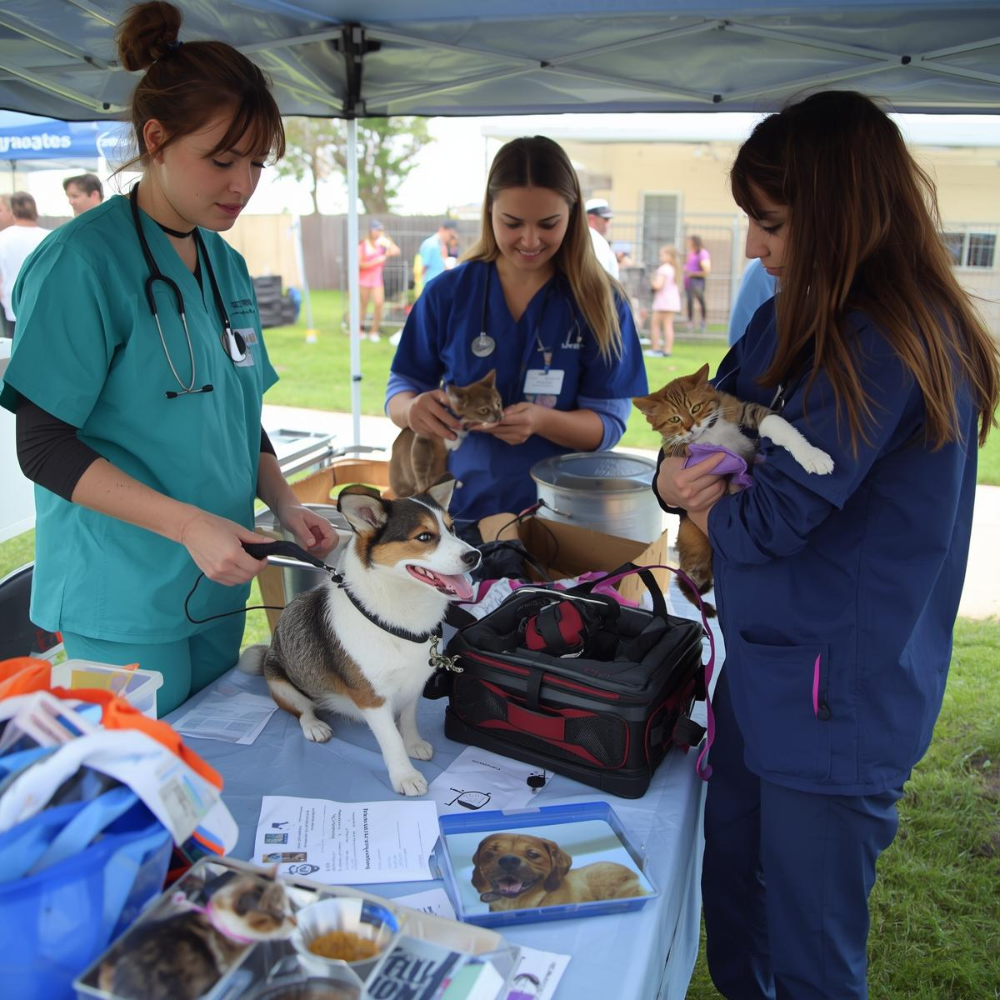

NOSSOS PROJETOS
CUIDAR, EDUCAR E TRANSFORMAR
Acreditamos que o verdadeiro resgate começa com consciência e empatia. Por isso além de acolher e cuidar dos animais, desenvolvemos ações que promovem a educação e o respeito em toda comunidade. Entre nossas iniciativas estão: Campanhas sobre conscientização sobre guarda responsável e bem estar animal, levando informação clara e acessível à população; Campanhas Castração Móvel por bairros da cidade; Campanhas de vacinação; Produção e distribuição de folhetos educativos, orientando sobre cuidados básicos, vacinação, Castração e combate aos maus tratos; Projetos em escolas do bairro, onde levaremos palestras, atividades lúdicas e momentos de aprendizado, ensinando ás crianças o valor da empatia e da proteção aos animais.
Cada projeto é uma oportunidade de plantar sementes de amor e responsabilidade, construindo um futuro onde humanos e animais vivam em harmonia.
Quer trazer um projeto nosso para sua escola, empresa ou comunidade? Entre em contato e faça parte dessa corrente de transformação.
Promovemos campanhas de conscientização atraves de entregas de folhestos informativos a população e também realizamos campanhas de vacinação e castração regularmente. Levando cuidado, informação e amor as famílias e os animais.
.png)
Campanhas de Vacinação e Castração
Promovemos campanhas de vacinação e castração que levam amor, cuidado e informação aos animais e às comunidades da nossa cidade, fortalecendo a conscientização e o respeito por todas as formas de vida.
